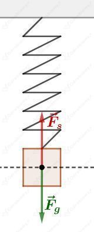

a)
W chwili ciężarek znajdował się w położeniu i poruszał się w górę.
b)
Ciężarek po raz pierwszy osiąga najniższe położenie: w chwili .
c)
W chwili ciężarek poruszał się w dół - zbliżał się do położenia równowagi.
d)
Okres ruchu ciężarka wynosi . Zatem po czasie dwóch okresów - ciężarek znajdzie się ponownie w położeniu równowagi (tak jak początkowo) i po kolejnych (łącznie ) ciężarek znajdzie się w położeniu równowagi.
a)
Amplituda drgań ciężarka to maksymalne wychylenie ciężarka z położenia równowagi (odczytujemy ja z osi ):
Okres drgań wahadła to czas, w którym wahadło wykonuje jedno pełne drganie. Z wykresu odczytujemy go jako odcinek czasowy pomiędzy najbliższymi punktami wykonującymi taki sam ruch drgający. Np. punkty w maksymalnych wychyleniach w górę lub w dół, albo punkty będące w położeniach równowagi, których ruch następuje w górę lub których ruch następuje w dół.
b)
Okres wyrazimy poprzez liczbę pełnych cykli drgań i czas wykonywania tych drgań jako:
Stąd liczba pełnych cykli drgań wynosiła:
Wózek przemieści się w przeciwną stronę niż puszczone wahadło, tak by środek ciężkości układu wahadło i wózek pozostał w spoczynku.
Swój puls możesz zmierzyć przyciskając palcami tętnicę na szyi lub nadgarstku.
Przykładowa liczba zmierzonych uderzeń serca:
Czas pomiaru:
Okres bicia serca wyznaczymy jako:
Częstotliwość bicia serca wyznaczymy jako:
Częstotliwość prądu przemiennego wynosi:
Z taką samą częstotliwością musi obracać się silnik.
Częstotliwość możemy wyrazić jako stosunek liczby pełnych obrotów do czasu tych obrotów.
Stąd liczbę obrotów wyrazimy jako:
Silnik musi wykonywać 3000 obrotów na minutę.
Rysunek pomocniczy do zadania przedstawia przebieg jednego okresu drgań ciężarka:
Okres drgań ciężarka wynosi:
O godzinie 12:00:00 ciężarek znajduje się w położeniu równowagi.
Najbliższe najwyższe położenie ciężarka nastąpi za:
Czas: 12:00:01
A kolejne po pełnych okresach od chwili 12:00:01.
Czas: 12:00:05; 12:00:09; 12:00:13.
Najbliższe najniższe położenie ciężarka nastąpi za:
Czas: 12:00:03
A kolejne po pełnych okresach od chwili 12:00:03.
Czas: 12:00:07; 12:00:11; 12:00:15.
Siła wypadkowa działająca na ciężarek wahadła sprężynowego jest zawsze zwrócona w stronę położenia równowagi.
Na rysunkach poniżej położenie równowagi oznaczono linią przerywaną.
W każdym przypadku na ciężarek działają siły:
a)
Siła wypadkowa będzie równa:
Siła wypadkowa ma kierunek pionowy i jest zwrócona w dół.
b)
Siła wypadkowa ma kierunek pionowy i jest zwrócona w górę.
c)

Siła wypadkowa będzie równa:
Na ciężarek nie działa siła wypadkowa.
Ciężarek porusza się w dół, jest poniżej położenia równowagi i zbliża się do maksymalnego wychylenia.
Ciężarek spowalnia (w maksymalnym wychyleniu na chwilę zatrzyma się), więc jego energia kinetyczna maleje.
Energia potencjalna grawitacji ciężarka maleje ponieważ jego wysokość nad podłożem maleje.
Sprężyna, na której jest zawieszony ciężarek ulega rozciągnięciu, więc energia potencjalna sprężystości rośnie.